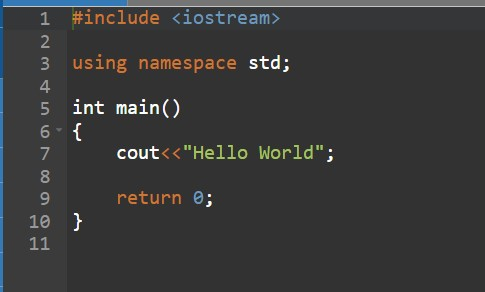

C++ is one of the most popular programming languages. It is used to create many programs and is mainly used in game developement
C++ is an object-oriented prgamming language. It is a superset of the C Language
You will need 2 things before starting to code in C++
- Text editor, to write up the code (such as Notepad++)
- A compiler, so the computer can understand the code (such as MinGW)
Some more elements that are not needed but can help include:
- Watching Youtube Videos on how to code in C++
- Install an IDE which can edit and compile the code together
- Visiting FreeCodeCamp to keep up to date with coding
The best way to start coding is a simple "Hello World" task
Follow the following steps to create your first code:
- Start a new coding file, with the name helloworld.cpp
- Type out the following code:

#include < iostream >that works with input and output objects and is a library that adds functionality to the C++ library. This should be included in almost every single type of projectusing namespace stdallows us to use basic terms from the library, instead of creating our own (helps clean up the program)int main{}creates a function, anything in the brackets will be executed in the codecoutis an object to output/print text. This is chained together with (<<) which is a way to stay that this needs to be outputted. In our example it will output "Hello World"-
return 0ends the function
When declaring a variable, you must choose a specific type and give it a value. An example of the syntax can include: VariableType NameOfVariable = value
Some specific types of variables can include but not limited to:
- Strings
- Int
- Char
- Bool
More information can be found in the next section of this webpage
As mentioned above, a variabele MUST have a data type. There are many different types of data types, but can be broken up into 4 main elements.
- Numeric Types: when you need to store any type of number that will be used mathmatically.
- Boolean: can only take values of true (which is valued at 1) or false (which is valued at 2)
- Characters: also known as char, this will store only one letter and has to be surrounded by quotes
- Strings: to store > 1 characters. This can include letters, symbols and numbers that are not used mathematically.
Comments are very important in your code as they allow you to explain what the code is actually doing in simple terms. They can be single lined or multi-lined
// This is a single lined comment
Which shows that comments can overflow */ /* This is a multi-lined comment